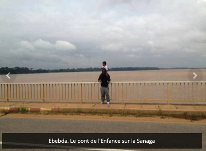
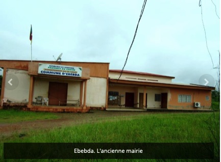
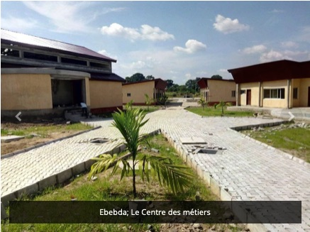
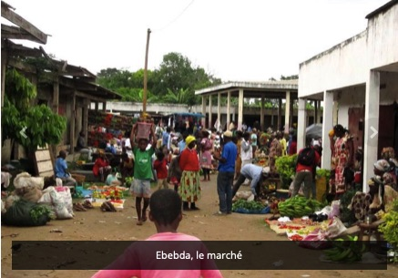

Les lieux à visiter
Parmi les lieux à visiter on peut citer :
- Le pont de l'enfance sur le fleuve Sanaga de plus d'un kilomètre;
- La mairie
- Le centre des arts et métiers
- le marché d'd’EBEBDA
Le pont sur le fleuve Sanaga
Le Pont est bâti à l’endroit où le lit du fleuve est le plus étendu1. Ébebda est le point de convergence de deux grands cours d’eau : le Mbam et la Sanaga1. Le débit élevé à cet endroit peut expliquer la longueur exceptionnelle de l’ouvrage1. La construction du pont a beaucoup contribué à raccourcir un trajet jusque là long et éprouvant1. Il est difficile d'avoir des offres de transport public pour Ébebda directement, la localité n'étant pas un village étape sur la Nationale N°41. Le pont sur la Sanaga se trouve à deux kilomètres du centre d'Ébebda1. Non loin du pont se trouve un chantier d’extraction de sable2. A Ébebda, on traverse un pont, ouvrage d’art important qui enjambe la Sanaga. Ce fleuve est rempli de sable. On peut apercevoir les pêcheurs de sable en activité. C’est une vraie flottille de bateaux et de barges, avec à leur bord des pêcheurs armés de perches, poussant sur le fond du fleuve. Les barques comptent en général deux hommes. L’un plonge un grand panier au fond de l’eau afin de remonter le maximum de sable1.
Le bâtiment de la mairie
Le Pont est bâti à l’endroit où le lit du fleuve est le plus étendu1. Ébebda est le point de convergence de deux grands cours d’eau : le Mbam et la Sanaga1. Le débit élevé à cet endroit peut expliquer la longueur exceptionnelle de l’ouvrage1. La construction du pont a beaucoup contribué à raccourcir un trajet jusque là long et éprouvant1. Il est difficile d'avoir des offres de transport public pour Ébebda directement, la localité n'étant pas un village étape sur la Nationale N°41. Le pont sur la Sanaga se trouve à deux kilomètres du centre d'Ébebda1. Non loin du pont se trouve un chantier d’extraction de sable2. A Ébebda, on traverse un pont, ouvrage d’art important qui enjambe la Sanaga. Ce fleuve est rempli de sable. On peut apercevoir les pêcheurs de sable en activité. C’est une vraie flottille de bateaux et de barges, avec à leur bord des pêcheurs armés de perches, poussant sur le fond du fleuve. Les barques comptent en général deux hommes. L’un plonge un grand panier au fond de l’eau afin de remonter le maximum de sable1.
Le centre des arts et métiers
Le Pont est bâti à l’endroit où le lit du fleuve est le plus étendu1. Ébebda est le point de convergence de deux grands cours d’eau : le Mbam et la Sanaga1. Le débit élevé à cet endroit peut expliquer la longueur exceptionnelle de l’ouvrage1. La construction du pont a beaucoup contribué à raccourcir un trajet jusque là long et éprouvant1. Il est difficile d'avoir des offres de transport public pour Ébebda directement, la localité n'étant pas un village étape sur la Nationale N°41. Le pont sur la Sanaga se trouve à deux kilomètres du centre d'Ébebda1. Non loin du pont se trouve un chantier d’extraction de sable2. A Ébebda, on traverse un pont, ouvrage d’art important qui enjambe la Sanaga. Ce fleuve est rempli de sable. On peut apercevoir les pêcheurs de sable en activité. C’est une vraie flottille de bateaux et de barges, avec à leur bord des pêcheurs armés de perches, poussant sur le fond du fleuve. Les barques comptent en général deux hommes. L’un plonge un grand panier au fond de l’eau afin de remonter le maximum de sable1.
Le marché
Le Pont est bâti à l’endroit où le lit du fleuve est le plus étendu1. Ébebda est le point de convergence de deux grands cours d’eau : le Mbam et la Sanaga1. Le débit élevé à cet endroit peut expliquer la longueur exceptionnelle de l’ouvrage1. La construction du pont a beaucoup contribué à raccourcir un trajet jusque là long et éprouvant1. Il est difficile d'avoir des offres de transport public pour Ébebda directement, la localité n'étant pas un village étape sur la Nationale N°41. Le pont sur la Sanaga se trouve à deux kilomètres du centre d'Ébebda1. Non loin du pont se trouve un chantier d’extraction de sable2. A Ébebda, on traverse un pont, ouvrage d’art important qui enjambe la Sanaga. Ce fleuve est rempli de sable. On peut apercevoir les pêcheurs de sable en activité. C’est une vraie flottille de bateaux et de barges, avec à leur bord des pêcheurs armés de perches, poussant sur le fond du fleuve. Les barques comptent en général deux hommes. L’un plonge un grand panier au fond de l’eau afin de remonter le maximum de sable1.